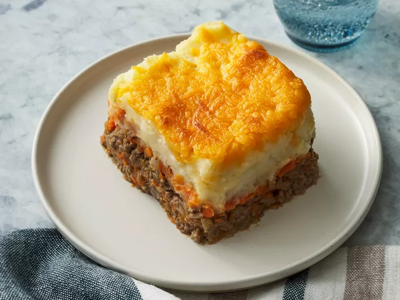

Sheperd's Pie
Sheperd's Pie

Description
It is a good meal! It has potatoes and gravy, I think. There is either lamb or beef in it.
It sometimes is made with beer. Sometimes I put cheese on the top as well. It has vegetables
as well. I could make this into a masterpiece, but I could eat buttered noodles everday and be
happy. So, I hope you enjoyed my description!
Ingredients!
- Ground Beef(Lamb...)
- Mashed Potatoes
- Vegetables(should be peas)
- Flour
- Ketchup
- Beef Broth
- Cheese
Steps
- Make the mashed potatoes.
- Boil and mash the carrots.
- Cook the beef-onion mixture.
- Assemble the shepherd's pie.
- Bake the shepherd's pie until the top is golden brown.